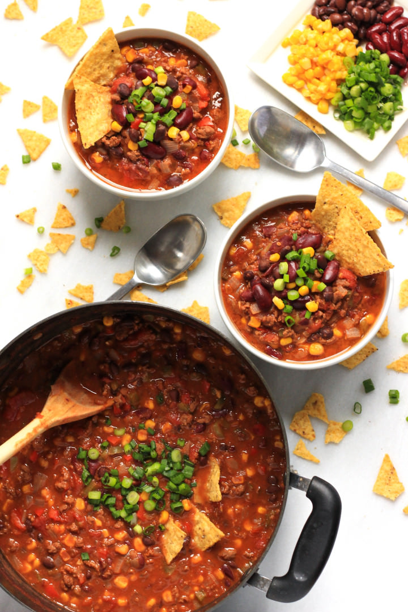

One Pot Chili
This recipe is customizable, so feel free to adjust the seasonings or add additional ingredients to suit your tastes. You can also make this recipe in a slow cooker or Instant Pot for added convenience.
Ingredients:- 1 pound of ground meat (I used beef, but you could very well use turkey)
- 1 red bell pepper, diced
- 1 green bell pepper, diced
- 1 large onion, diced
- 2 large garlic cloves, minced
- 1 teaspoon of ground chili powder
- 1 teaspoon of curry powder
- 1 teaspoon of red chili pepper flakes
- 2 teaspoons of salt
- 1 15 oz. can of black beans
- 1 15 oz. can of red kidney beans
- 1 15 oz. can of sweet corn kernels
- 3 cups of stock (chicken, vegetable or beef)
- 1 28 oz. can of peeled and diced tomatoes
- Chopped spring onions, for garnishing (optional)
- Corn tortilla chips, for garnishing (optional)
- Instructions:
- Brown the Meat: In a large pot, heat up a little oil and brown the ground meat until just cooked. Set aside.
- Sauté the Veggies: In the same pot, heat up a little more oil and cook the diced bell peppers and onions, until onions are translucent (about 10 minutes). Make a small hole in the middle of the vegetables and add the minced garlic and let cook for around 30 seconds before mixing the garlic with the rest of the vegetables.
- Add the Seasonings: Add in ground chili pepper, curry powder, red chili pepper flakes and salt and mix well to ensure vegetables are all coated with the seasoning
- Simmer: Pour in the stock and let simmer over medium-low heat for 30 minutes. Add in the browned minced meat, tomatoes, beans and corn and stir well, letting it simmer for another 20 minutes, or until chili is no longer soupy and has a thick consistency.
- Garnish and Serve: Serve chili hot garnished with fresh spring onions and corn tortilla chips